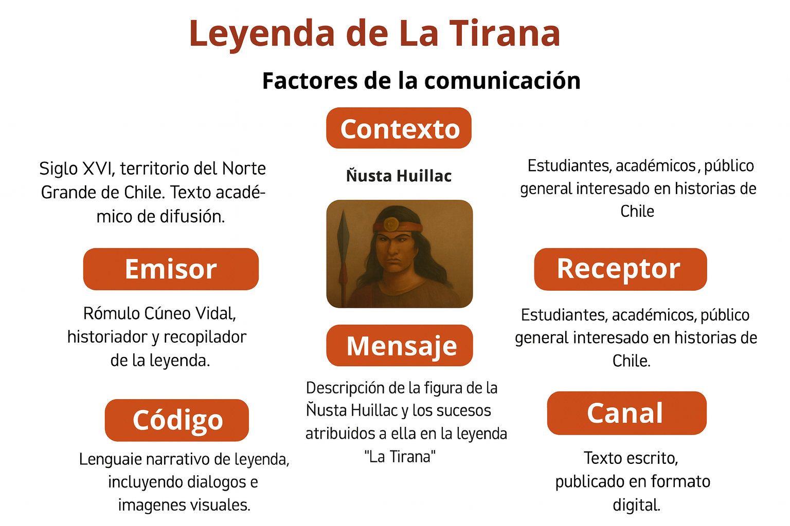
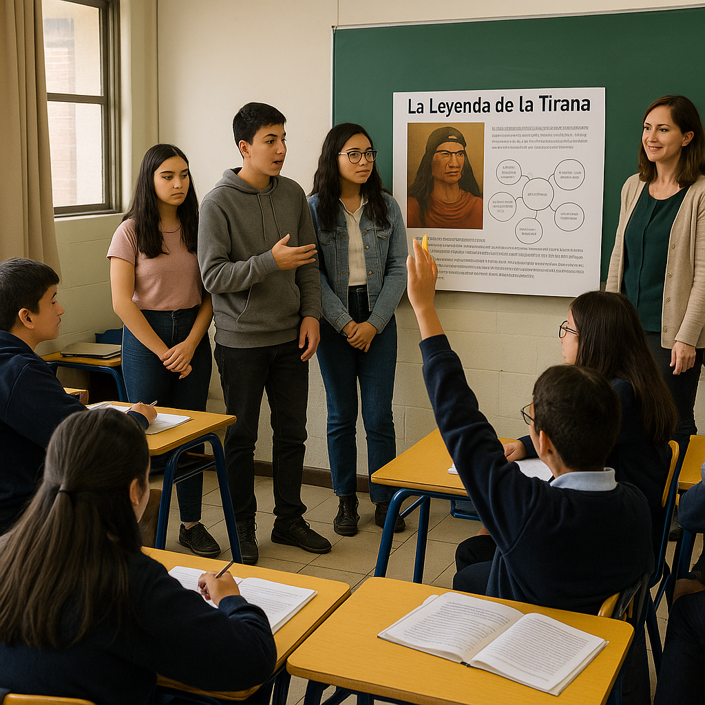
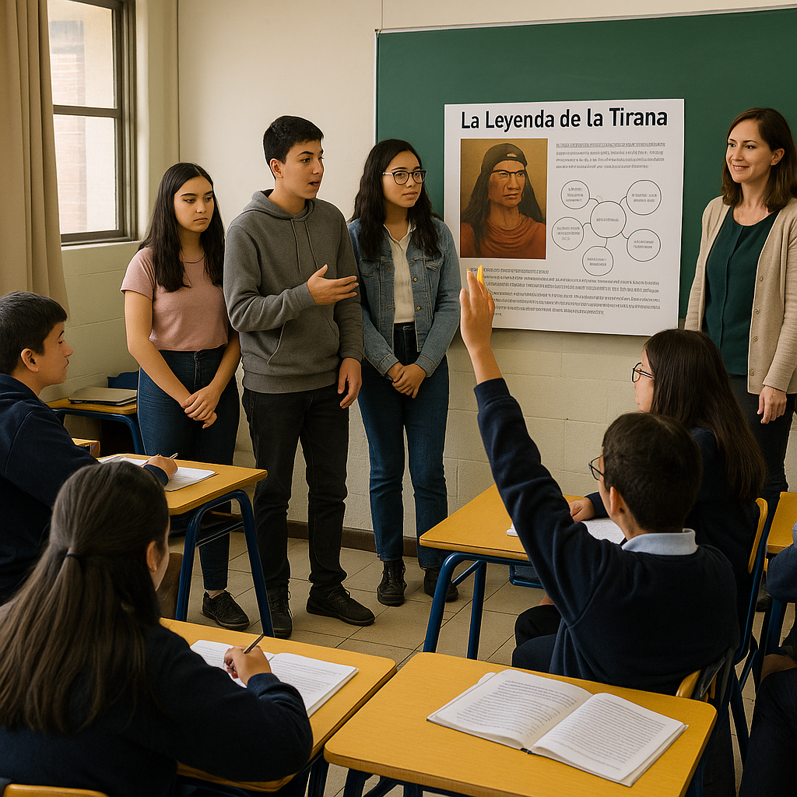
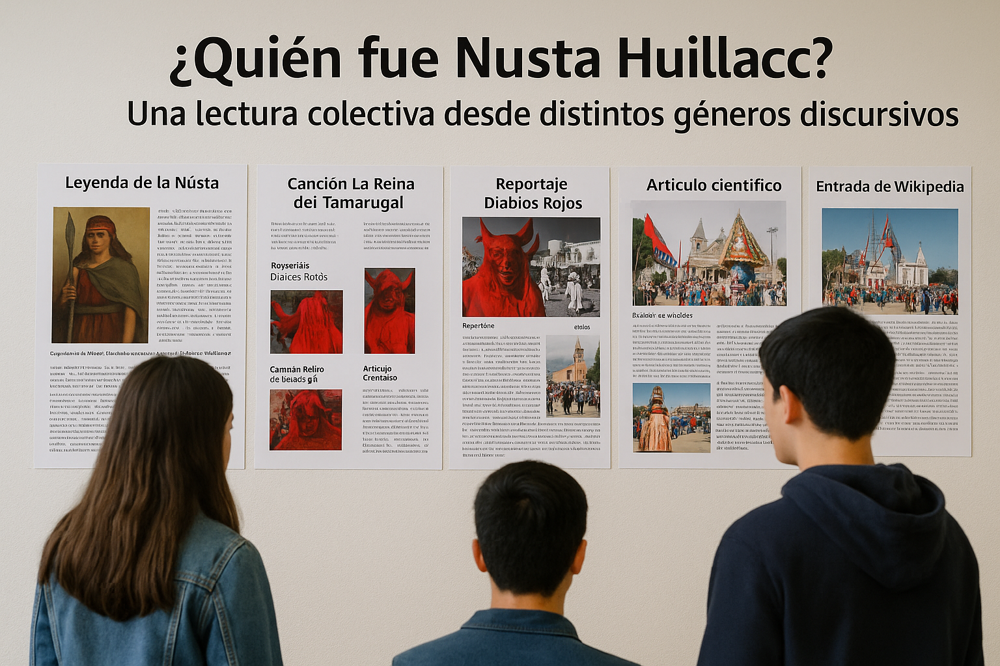
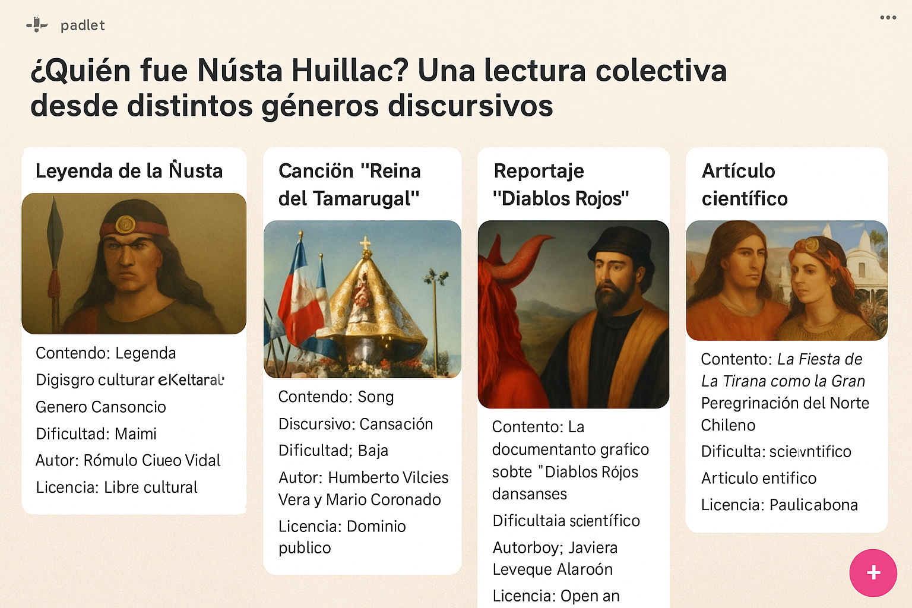

Tiempo: 1 clase de 40 - 90 minutos
Objetivo general:
Compartir públicamente los análisis realizados en torno a los textos leídos sobre la figura de Ñusta Huillac, utilizando el modelo de Roman Jakobson como organizador discursivo, y construir colectivamente una comprensión más profunda de cómo se representa su figura en diferentes géneros.
1. Sistematización creativa de la información
Una vez leído y analizado el texto, cada grupo deberá organizar la información de forma creativa y clara, destacando:
- El tipo de texto y su género discursivo.
- Las características comunicativas que identificaron en base a los factores de la comunicación.
- Lo que el texto cuenta sobre Ñusta Huillac y su vínculo con la Fiesta de La Tirana.
Ejemplo básico:

Pueden presentar su trabajo de dos maneras:
Opción A: Presentación física: Usen cartulinas, recortes, lápices, marcadores, fotografías impresas, papel kraft, etc.
Pueden hacer un collage informativo, una infografía en papel o una ficha visual que resuma el análisis del texto.
Opción B: Presentación digital: Usen herramientas como Canva, PowerPoint, Genially o Google Slides.
Pueden crear una presentación, una línea del tiempo, una infografía digital o un mapa conceptual.
Actividad opcional: Evaluación crítica de la fuente
Al final de la presentación, incluyan una breve valoración crítica del texto leído:
- ¿Qué tan clara, completa o confiable les pareció la información?
- ¿La fuente es reconocida o anónima?
- ¿Hubo sesgos o limitaciones en la forma de contar los hechos?
2. Presentación grupal de los trabajos
 Representación Presentación Final.
Representación Presentación Final.
Imagen generada con inteligencia artificial (GPT, 2025)
Formato sugerido:
- Puede ser panel físico, presentación digital, video breve, podcast o cualquier formato acordado.
- Cada grupo debe exponer entre 5 a 10 minutos, según el número de grupos y tiempo total disponible.
Contenidos a presentar:
- Breve presentación del texto trabajado (tipo, título, autor/a, síntesis).
- Exposición de los factores de la comunicación de Jakobson, dividiéndolos entre los integrantes del grupo (uno por estudiante si es posible).
Énfasis en:
- Tipo de lenguaje utilizado.
- Finalidad o propósito comunicativo.
- Qué imagen se construye de Ñusta Huillac a partir de ese texto.
- Conexión con los otros textos trabajados si corresponde.
3. Visibilización de los productos
- Si son físicos, colgar los paneles en el aula o pasillo bajo el título: “¿Quién fue Ñusta Huillac? Una lectura colectiva desde distintos géneros discursivos”
- Si son digitales, compartir en un Padlet, carpeta Drive común, o blog del curso.

Representación de trabajos finales en físico y virtual.
Imágenes generadas con inteligencia artificial (GPT, 2025)
4. Retroalimentación de la docente
Después de cada presentación:
- Valida el esfuerzo del grupo (reconocimiento emocional y académico).
Profundiza señalando:
- Otros aspectos relevantes del género no mencionados.
- Posibles influencias culturales, ideológicas o estéticas del texto.
- Comentarios sobre la adecuación del análisis al modelo de Jakobson.
- Puedes cerrar con 1 o 2 preguntas abiertas que inviten a la reflexión.
5. Participación del curso
Abrir un pequeño espacio de preguntas o comentarios del curso hacia el grupo expositor:
¿Estás de acuerdo con lo que dijeron sobre la intención del autor?
¿En qué otro género podríamos haber encontrado a la Ñusta?
¿Qué tipo de texto creen que representa mejor su figura? ¿Por qué?
6. Cierre colectivo y reflexión final (opcional)
Dinámica sugerida: “Una palabra para la Ñusta”
Cada estudiante dice en voz alta una palabra que defina a Ñusta Huillac según lo trabajado (rebelde, símbolo, leyenda, mujer, resistencia…).
Escribe todas en la pizarra o en un cartel.
Opción adicional:
Pide que completen esta frase en una hoja o en un mural:
Ñusta Huillac no es solo una leyenda, también es...
(puede ser anónimo o firmado)